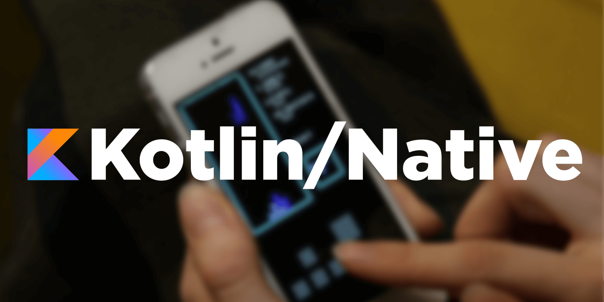

A trip into Kotlin Multiplatform Projects, Part 1
Sharing code across Android and iOS used to mean compromise: a cross-platform UI toolkit, a web view, or a pile of conditional logic. Kotlin Multiplatform takes a different route — share the logic, keep the native UI.
The shape of a shared module
A multiplatform module declares a common source set plus one per target. The
common code states what it needs; each platform supplies how.
That contract is expect / actual:
// commonMain — shared declaration
expect class Platform() {
val platform: String
}
// androidMain — actual implementation
actual class Platform actual constructor() {
actual val platform: String =
"Android ${Build.VERSION.SDK_INT}"
}
The compiler guarantees every expect has a matching
actual for the target you build. Miss one and the build fails —
no runtime surprises.
Share the cost of correctness once; pay for platform polish where it actually matters — at the edges, in the UI.
Where this pays off
Networking, serialization, validation, and state machines are identical on
both platforms. Move them into commonMain and the duplication —
and the bugs that drift between two copies — disappears.
In Part 2 we wire a real repository into the shared module and
consume it from an Android ViewModel and a Swift view.